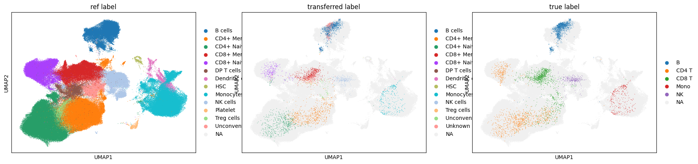
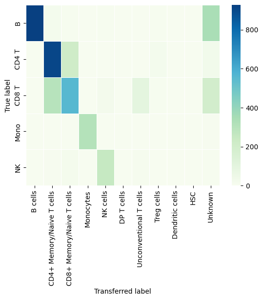

Train and transfer label
[2]:
from modules.MIRACLE import MIRACLE, create_data
from modules import utils
import scanpy as sc
import numpy as np
import pandas as pd
import torch
import os
os.environ['CUDA_VISIBLE_DEVICES'] = '2'
Transfer label via KNN algorithmn
After training with MIRACLE, the reference data is effectively mixed with the query data.
We then leverage KNN algorithm to transfer labels from the reference to the query data. However, since the query data may have unknown labels, we label all query cells as “Unknown” and train the KNN model using a combination of reference and “Unknown” labels. This enables the annotation of cells that do not belong to any reference cell types.
[12]:
from sklearn.neighbors import KNeighborsClassifier
from sklearn.metrics import confusion_matrix, f1_score, roc_auc_score
from joblib import Parallel, delayed
import seaborn as sns
def predict_batch(X, knn_model):
return knn_model.predict(X)
def predict_prob_batch(X, knn_model):
return knn_model.predict_proba(X)
def knn_predict_par(X, knn_model, num_cores):
X_batches = np.array_split(X, num_cores)
with Parallel(n_jobs=num_cores, backend="threading") as parallel:
results = parallel(delayed(predict_batch)(X_batch, knn_model) for X_batch in X_batches)
return np.concatenate(results)
def knn_predict_prob_par(X, knn_model, num_cores):
X_batches = np.array_split(X, num_cores)
with Parallel(n_jobs=num_cores, backend="threading") as parallel:
results = parallel(delayed(predict_prob_batch)(X_batch, knn_model) for X_batch in X_batches)
return np.concatenate(results)
[13]:
labels_with_unknown = np.concatenate([label_ref.values.flatten(), ['Unknown']*len(label_query_true)])
print(labels_with_unknown)
knn = KNeighborsClassifier(n_neighbors=100, weights='uniform')
knn.fit(c, labels_with_unknown)
prob_pred = knn_predict_prob_par(c[-len(label_query_true):], knn, 72)
['CD8+ Memory T cells' 'CD4+ Memory T cells' 'DP T cells' ... 'Unknown'
'Unknown' 'Unknown']
OpenBLAS Warning : Detect OpenMP Loop and this application may hang. Please rebuild the library with USE_OPENMP=1 option.
OpenBLAS Warning : Detect OpenMP Loop and this application may hang. Please rebuild the library with USE_OPENMP=1 option.
OpenBLAS Warning : Detect OpenMP Loop and this application may hang. Please rebuild the library with USE_OPENMP=1 option.
OpenBLAS Warning : Detect OpenMP Loop and this application may hang. Please rebuild the library with USE_OPENMP=1 option.
OpenBLAS Warning : Detect OpenMP Loop and this application may hang. Please rebuild the library with USE_OPENMP=1 option.
OpenBLAS Warning : Detect OpenMP Loop and this application may hang. Please rebuild the library with USE_OPENMP=1 option.
OpenBLAS Warning : Detect OpenMP Loop and this application may hang. Please rebuild the library with USE_OPENMP=1 option.
OpenBLAS Warning : Detect OpenMP Loop and this application may hang. Please rebuild the library with USE_OPENMP=1 option.
OpenBLAS Warning : Detect OpenMP Loop and this application may hang. Please rebuild the library with USE_OPENMP=1 option.
OpenBLAS Warning : Detect OpenMP Loop and this application may hang. Please rebuild the library with USE_OPENMP=1 option.
OpenBLAS Warning : Detect OpenMP Loop and this application may hang. Please rebuild the library with USE_OPENMP=1 option.
OpenBLAS Warning : Detect OpenMP Loop and this application may hang. Please rebuild the library with USE_OPENMP=1 option.
OpenBLAS Warning : Detect OpenMP Loop and this application may hang. Please rebuild the library with USE_OPENMP=1 option.
OpenBLAS Warning : Detect OpenMP Loop and this application may hang. Please rebuild the library with USE_OPENMP=1 option.
OpenBLAS Warning : Detect OpenMP Loop and this application may hang. Please rebuild the library with USE_OPENMP=1 option.
OpenBLAS Warning : Detect OpenMP Loop and this application may hang. Please rebuild the library with USE_OPENMP=1 option.
OpenBLAS Warning : Detect OpenMP Loop and this application may hang. Please rebuild the library with USE_OPENMP=1 option.
[14]:
prob_pred_unknown = prob_pred[:, -1]
unknown_cell = np.array([False]*len(label_query_true))
prob_pred_unknown
[14]:
array([0.02, 0.28, 0.08, ..., 0.24, 0.21, 0.1 ])
[15]:
predict_label = np.unique(labels_with_unknown)[np.argmax(prob_pred,axis=1)]
predict_label
[15]:
array(['CD8+ Memory T cells', 'NK cells', 'Monocytes', ..., 'NK cells',
'NK cells', 'CD4+ Naive T cells'], dtype=object)
[16]:
adata.obs['transferred label'] = pd.DataFrame(predict_label.astype('str'), index=[i.split("_")[1] for i in list(query_data.cell_names.values())[0]])
sc.pl.umap(adata, color=['ref label', 'transferred label', 'true label'], na_color='#F0F0F0', size=3)
/root/anaconda3/envs/test_env3/lib/python3.11/site-packages/scanpy/plotting/_tools/scatterplots.py:394: UserWarning: No data for colormapping provided via 'c'. Parameters 'cmap' will be ignored
cax = scatter(
/root/anaconda3/envs/test_env3/lib/python3.11/site-packages/scanpy/plotting/_tools/scatterplots.py:394: UserWarning: No data for colormapping provided via 'c'. Parameters 'cmap' will be ignored
cax = scatter(
/root/anaconda3/envs/test_env3/lib/python3.11/site-packages/scanpy/plotting/_tools/scatterplots.py:394: UserWarning: No data for colormapping provided via 'c'. Parameters 'cmap' will be ignored
cax = scatter(

[17]:
all_kinds = np.unique(np.concatenate([label_query_true.values.flatten(), predict_label]))
all_kinds
[17]:
array(['B', 'B cells', 'CD4 T', 'CD4+ Memory T cells',
'CD4+ Naive T cells', 'CD8 T', 'CD8+ Memory T cells',
'CD8+ Naive T cells', 'DP T cells', 'Dendritic cells', 'HSC',
'Mono', 'Monocytes', 'NK', 'NK cells', 'Treg cells',
'Unconventional T cells', 'Unknown'], dtype=object)
[26]:
import matplotlib.pyplot as plt
df = pd.DataFrame(confusion_matrix(label_query_true.values.flatten(),predict_label,labels=all_kinds), index=all_kinds,columns=all_kinds).loc[np.unique(label_query_true.values.flatten()), np.unique(predict_label) ]
df.loc[:, 'CD4+ Memory/Naive T cells'] = df.loc[:, 'CD4+ Memory T cells']+ df.loc[:, 'CD4+ Naive T cells']
df.loc[:, 'CD8+ Memory/Naive T cells'] = df.loc[:, 'CD8+ Memory T cells']+ df.loc[:, 'CD8+ Naive T cells']
df = df.drop(['CD4+ Memory T cells', 'CD4+ Naive T cells', 'CD8+ Memory T cells', 'CD8+ Naive T cells'], axis=1)
# df = df / df.sum(axis=0)
df = df.loc[:, ["B cells", "CD4+ Memory/Naive T cells", "CD8+ Memory/Naive T cells", "Monocytes", "NK cells", "DP T cells", "Unconventional T cells", "Treg cells", "Dendritic cells", "HSC", "Unknown"]]
ax = sns.heatmap(df, linewidths=0.5,cmap="GnBu")
ax.set_xlabel('Transferred label')
ax.set_ylabel('True label')
[26]:
Text(50.722222222222214, 0.5, 'True label')

[ ]: